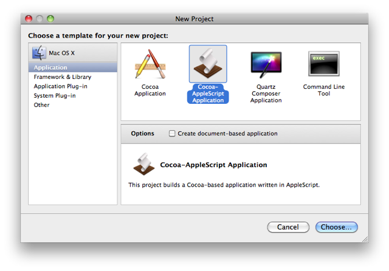

Developing AppleScript Applications
At some point in your career as an AppleScript scripter, you'll want to incorporate more features and abilities into the script solutions you create. For example, you might want to add an application interface for accepting user input, or show a floating window to display content for review, etc. Starting with Mac OS X v10.6 (Snow Leopard) you have the complete library of Macintosh interface elements available for your use, including access to the entire Cocoa frameworks of functions.
What's New?
Mac OS X v10.6 (Snow Leopard) has added significant updates and improvements to AppleScript and the construction of AppleScript-based applications. Here are a few:
- The AppleScript-Cocoa Bridge. AppleScript is now closely integrated with the Cocoa frameworks in Mac OS X, making it a first-class application development language. A new bridge architecture now gives AppleScript direct access to entire library of Cocoa methods and calls installed in Mac OS X. Cocoa methods can be called from within AppleScript scripts comprising the source of AppleScript-Cocoa applications.
- AppleScript-Cocoa Templates. Application templates in Xcode now include one for developing a Cocoa-AppleScript application. These templates include a new interface nib that provides access to the entire library of Interface Builder elements, which can now be linked to AppleScript source code using the same outlets, actions, and bindings that are used by the other development languages of Mac OS X.

What About AppleScript Studio?
Prior to Mac OS X v10.6 (Snow Leopard), AppleScript-based applications were developed using a set of Xcode templates commonly referred to as AppleScript Studio. A fundamental concept of AppleScript Studio is that user interface elements were treated as AppleScript objects, referenced by their position in their object hierarchy. Because of this, communicating with UI elements required a great deal of supporting AppleScript code, breakable if the UI objects were rearranged or changed. In the new AppleScript-Cocoa development environment, UI object are treated as Cocoa objects and can easily be bound to AppleScript source code using outlets, actions, and bindings. Linked UI elements can be rearranged or moved without effecting the AppleScript source code at all.
In Mac OS X v10.6 (Snow Leopard), AppleScript Studio applications and projects are supported but deprecated. Specifically:
- Running Existing Studio Applications. The AppleScript Studio frameworks from Mac OS X v.10.5 (Leopard) are included with Mac OS X v.10.6 (Snow Leopard), so existing applications created with AppleScript Studio still run on Mac OS X v.10.6 as they did on Mac OS X v.10.5.
- Editing Existing Studio Projects. Since the AppleScript Studio frameworks from Mac OS X v.10.5 are included with Mac OS X v.10.6, existing Studio projects remain editable in Xcode. However, any new projects will be created using the new AppleScript-Cocoa templates.
- What changes?. Most of the obvious changes between AppleScript Studio and AppleScript-Cocoa involve how the user interfaces of the applications are implemented. In AppleScript Studio, UI elements such as text fields were named and then referenced in the supporting scripts by their position in the hierarchy of items in their parent window, such as:
text field "item cost" of box "input values" of tab view "user input" of window "main"
In AppleScript-Cocoa applications, this type of referencing is unnecessary as controls are bound directly to script properties and functions through the use of Cocoa Bindings and IB actions and IB outlets. - What remains the same? The AppleScript code you used to perform the functions of the Studio application, remain the same. For example, the AppleScript code you used to copy, move, upload, or download files is the same. So does the AppleScript code you used to communicate with and control other applications, remains the same as well.
To quickly understand some of the differences between AppleScript Studio and the new AppleScript-Cocoa development environments, watch this introductory video about connecting application interfaces.
NOTE: If it necessary to access AppleScript Studio templates in Snow Leopard, enter the following in the Terminal application:
defaults write com.apple.InterfaceBuilder3 IBEnableAppleScriptStudioSupport -bool YES